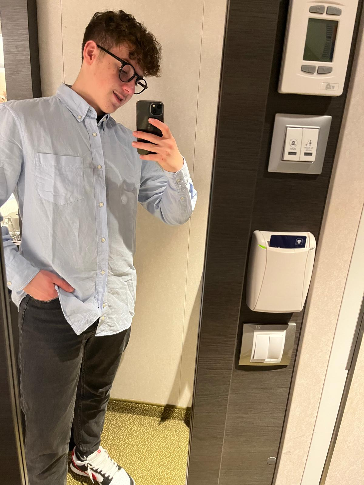

|

|
Salve a tutti, sono Simone Tarullo frequentante la classe 4A all’Itis EINSTEIN - DE LORENZO di Picerno.
Sono un ragazzo con grandi passioni, apprezzo molto il valore del lavoro, mi impegno fino in fondo fino a
raggiungere i miei obiettivi, infatti cerco sempre di migliorarmi.
Mi piace il calcio, infatti mi alleno da quando sono bambino. L’adrenalina del gioco,
mi rende sempre felice e mi spinge ad alzare l’asticella per superare ogni ostacolo.
Sono appassionato d’informatica, ed è proprio per questo che ho scelto questa scuola.
Grazie ad essa sono diventato molto curioso e sto diventando più preciso.
Riesco infatti a combinare l’energia fisica con la mia creatività.
|